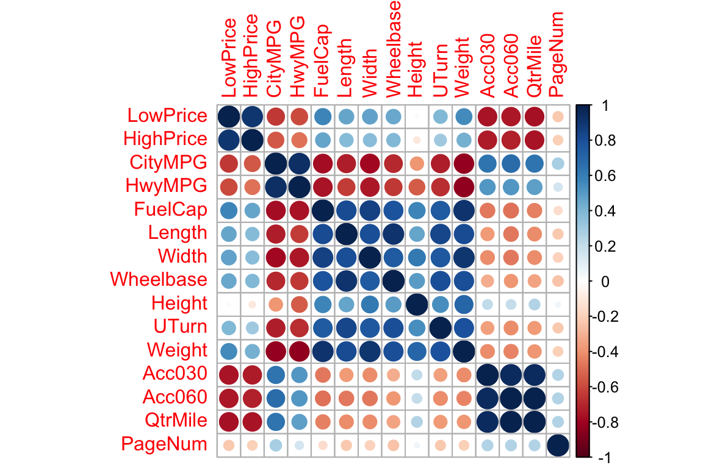
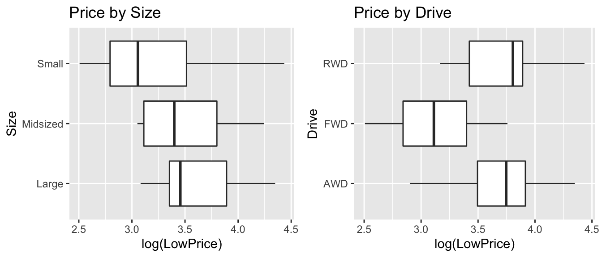
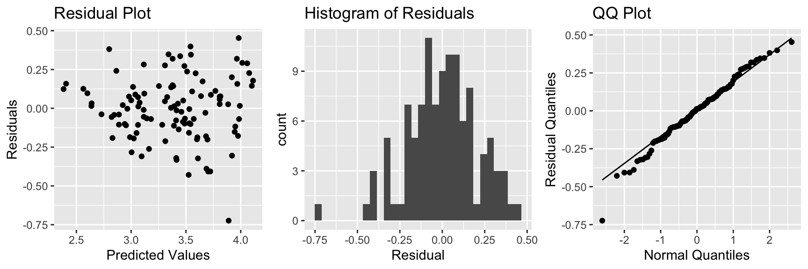
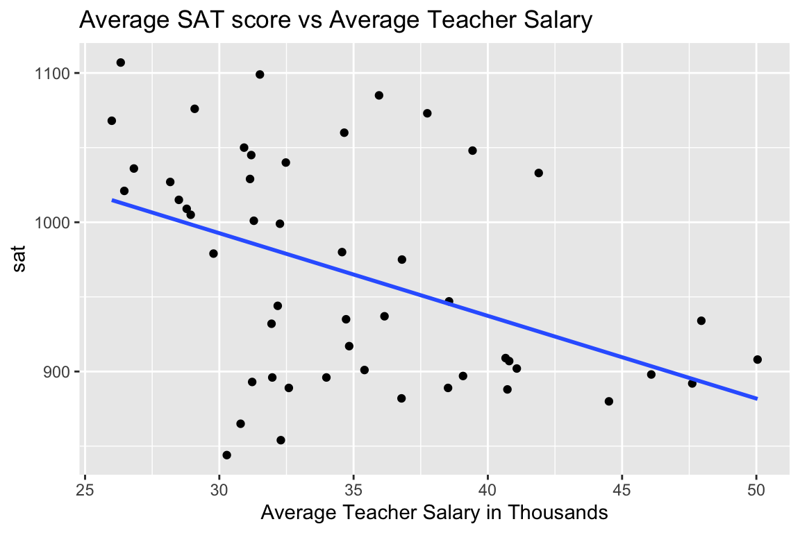
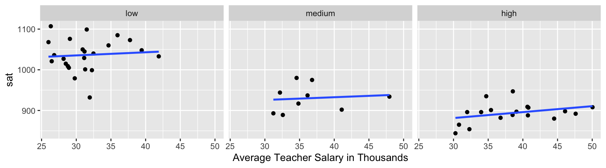
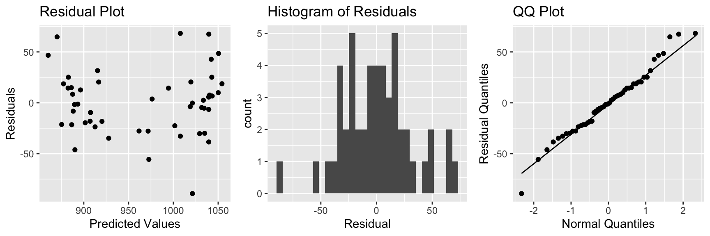
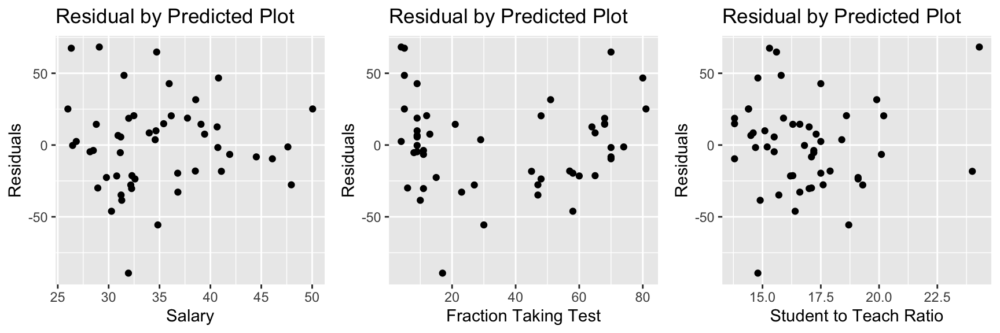
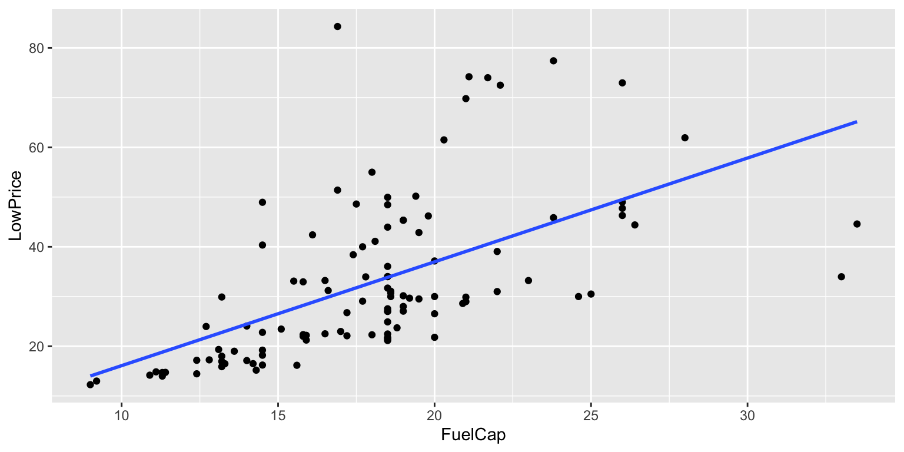
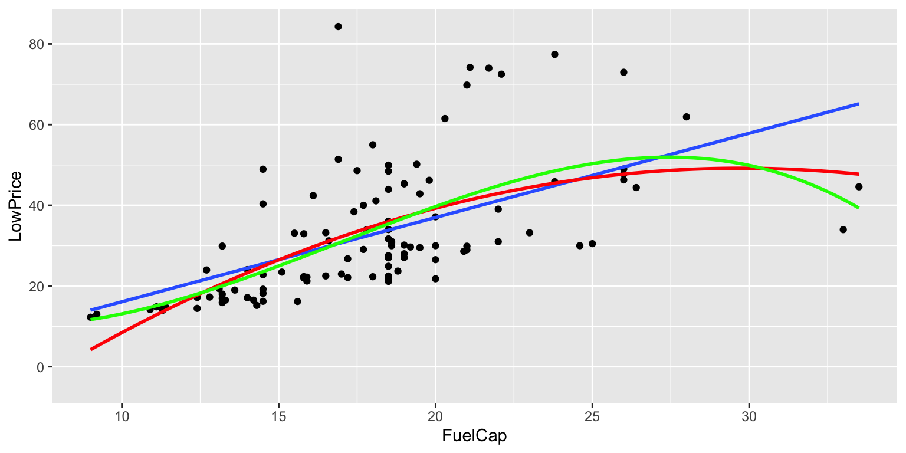

Chapter 7 Building Models for Interpretation
7.1 Introduction to Model Building
7.1.1 Overview of Model Building
So far, we've dealt with models with 2 or fewer variables. Often, we want to use more complex models.
We'll need to decide how many variables to include in the model. This is not an obvious decision, and will be different, depending on the purpose of the model.
We'll also need to make other decisions, such as whether or not to use interaction terms, or transformations.
7.1.2 Interpretation vs Prediction
While there are many interests in model building, we can often characterize these into two major types:
Building Models for Interpretation
- Intent is to help us understand relationships between variables. For example "what is expected to happen to Y when X increases by this much?"
- While these models can be used to make predictions, this is not the primary or sole intent.
- Aim for simple model that gives a realistic approximation of real situation.
- limited number of explanatory variables (usually \(\leq 10\))
- include interactions and use transformations only when necessary
- avoid including highly-correlated explanatory variables
- account for lurking variables (think Simpson's Paradox)
- limited number of explanatory variables (usually \(\leq 10\))
7.1.3 Interpretation vs Prediction (cont.)
While there are many interests in model building, we can often characterize these into two major types:
Building Models for Prediction
- Goal is to make the most accurate predictions possible.
- Not concerned with understanding relationships between variables. Not worried model being to complicated to interpret, as long as it yields good predictions.
- Aim for a model that best captures the signal in the data, without being thrown off by noise.
- Large number of predictors is ok
- Don't make model so complicated that it overfits the data.
- Large number of predictors is ok
7.1.4 Model for Price of 2015 Cars
What factors contribute to the price of a car?
Build a model for the price of a new 2015 car, in order to help us answer this question.
7.1.5 Glimpse of Cars Dataset
data(Cars2015)
glimpse(Cars2015)## Rows: 110
## Columns: 20
## $ Make <fct> Chevrolet, Hyundai, Kia, Mitsubishi, Nissan, Dodge, Chevrole
## $ Model <fct> Spark, Accent, Rio, Mirage, Versa Note, Dart, Cruze LS, 500L
## $ Type <fct> Hatchback, Hatchback, Sedan, Hatchback, Hatchback, Sedan, Se
## $ LowPrice <dbl> 12.270, 14.745, 13.990, 12.995, 14.180, 16.495, 16.170, 19.3
## $ HighPrice <dbl> 25.560, 17.495, 18.290, 15.395, 17.960, 23.795, 25.660, 24.6
## $ Drive <fct> FWD, FWD, FWD, FWD, FWD, FWD, FWD, FWD, FWD, FWD, FWD, AWD,
## $ CityMPG <int> 30, 28, 28, 37, 31, 23, 24, 24, 28, 30, 27, 27, 25, 27, 30,
## $ HwyMPG <int> 39, 37, 36, 44, 40, 35, 36, 33, 38, 35, 33, 36, 36, 37, 39,
## $ FuelCap <dbl> 9.0, 11.4, 11.3, 9.2, 10.9, 14.2, 15.6, 13.1, 12.4, 11.1, 11
## $ Length <int> 145, 172, 172, 149, 164, 184, 181, 167, 179, 154, 156, 180,
## $ Width <int> 63, 67, 68, 66, 67, 72, 71, 70, 72, 67, 68, 69, 70, 68, 69,
## $ Wheelbase <int> 94, 101, 101, 97, 102, 106, 106, 103, 104, 99, 98, 104, 104,
## $ Height <int> 61, 57, 57, 59, 61, 58, 58, 66, 58, 59, 58, 58, 57, 58, 59,
## $ UTurn <int> 34, 37, 37, 32, 37, 38, 38, 37, 39, 34, 35, 38, 37, 36, 37,
## $ Weight <int> 2345, 2550, 2575, 2085, 2470, 3260, 3140, 3330, 2990, 2385,
## $ Acc030 <dbl> 4.4, 3.7, 3.5, 4.4, 4.0, 3.4, 3.7, 3.9, 3.4, 3.9, 3.9, 3.7,
## $ Acc060 <dbl> 12.8, 10.3, 9.5, 12.1, 10.9, 9.3, 9.8, 9.5, 9.2, 10.8, 11.1,
## $ QtrMile <dbl> 19.4, 17.8, 17.3, 19.0, 18.2, 17.2, 17.6, 17.4, 17.1, 18.3,
## $ PageNum <int> 123, 148, 163, 188, 196, 128, 119, 131, 136, 216, 179, 205,
## $ Size <fct> Small, Small, Small, Small, Small, Small, Small, Small, Smal7.1.6 Categorical Variables
Cars_Cat <- select_if(Cars2015, is.factor)
summary(Cars_Cat)## Make Model Type Drive Size
## Chevrolet: 8 CTS : 2 7Pass :15 AWD:25 Large :29
## Ford : 7 2 Touring : 1 Hatchback:11 FWD:63 Midsized:34
## Hyundai : 7 200 : 1 Sedan :46 RWD:22 Small :47
## Toyoto : 7 3 i Touring: 1 Sporty :11
## Audi : 6 3 Series GT: 1 SUV :18
## Nissan : 6 300 : 1 Wagon : 9
## (Other) :69 (Other) :1037.1.7 Correlation Matrix for Quantitative Variables
Cars_Num <- select_if(Cars2015, is.numeric)
C <- cor(Cars_Num, use = "pairwise.complete.obs")
round(C,2)## LowPrice HighPrice CityMPG HwyMPG FuelCap Length Width Wheelbase
## LowPrice 1.00 0.91 -0.65 -0.59 0.57 0.47 0.48 0.46
## HighPrice 0.91 1.00 -0.56 -0.49 0.47 0.39 0.37 0.39
## CityMPG -0.65 -0.56 1.00 0.93 -0.77 -0.72 -0.78 -0.69
## HwyMPG -0.59 -0.49 0.93 1.00 -0.75 -0.64 -0.75 -0.64
## FuelCap 0.57 0.47 -0.77 -0.75 1.00 0.82 0.85 0.79
## Length 0.47 0.39 -0.72 -0.64 0.82 1.00 0.81 0.92
## Width 0.48 0.37 -0.78 -0.75 0.85 0.81 1.00 0.76
## Wheelbase 0.46 0.39 -0.69 -0.64 0.79 0.92 0.76 1.00
## Height 0.02 -0.10 -0.39 -0.54 0.58 0.46 0.62 0.49
## UTurn 0.40 0.31 -0.73 -0.68 0.76 0.84 0.77 0.81
## Weight 0.55 0.43 -0.83 -0.84 0.91 0.82 0.91 0.81
## Acc030 -0.76 -0.74 0.64 0.51 -0.47 -0.38 -0.41 -0.31
## Acc060 -0.74 -0.72 0.68 0.52 -0.49 -0.47 -0.46 -0.38
## QtrMile -0.76 -0.76 0.65 0.49 -0.45 -0.42 -0.41 -0.35
## PageNum -0.23 -0.20 0.28 0.15 -0.15 -0.23 -0.20 -0.24
## Height UTurn Weight Acc030 Acc060 QtrMile PageNum
## LowPrice 0.02 0.40 0.55 -0.76 -0.74 -0.76 -0.23
## HighPrice -0.10 0.31 0.43 -0.74 -0.72 -0.76 -0.20
## CityMPG -0.39 -0.73 -0.83 0.64 0.68 0.65 0.28
## HwyMPG -0.54 -0.68 -0.84 0.51 0.52 0.49 0.15
## FuelCap 0.58 0.76 0.91 -0.47 -0.49 -0.45 -0.15
## Length 0.46 0.84 0.82 -0.38 -0.47 -0.42 -0.23
## Width 0.62 0.77 0.91 -0.41 -0.46 -0.41 -0.20
## Wheelbase 0.49 0.81 0.81 -0.31 -0.38 -0.35 -0.24
## Height 1.00 0.55 0.71 0.21 0.21 0.25 0.06
## UTurn 0.55 1.00 0.80 -0.36 -0.41 -0.37 -0.22
## Weight 0.71 0.80 1.00 -0.41 -0.43 -0.39 -0.20
## Acc030 0.21 -0.36 -0.41 1.00 0.95 0.95 0.25
## Acc060 0.21 -0.41 -0.43 0.95 1.00 0.99 0.26
## QtrMile 0.25 -0.37 -0.39 0.95 0.99 1.00 0.26
## PageNum 0.06 -0.22 -0.20 0.25 0.26 0.26 1.007.1.8 Correlation Plot for Quantitative Variables
library(corrplot)
C <- corrplot(C)
7.1.9 Multicollinearity in Modeling
What happens when we include two highy-correlated explanatory variables in the same model?
cor(Cars2015$Acc060, Cars2015$QtrMile)## [1] 0.99166257.1.10 Model Using Acceleration Time
Cars_M1 <- lm(data=Cars2015, log(LowPrice) ~ Acc060)
summary(Cars_M1)##
## Call:
## lm(formula = log(LowPrice) ~ Acc060, data = Cars2015)
##
## Residuals:
## Min 1Q Median 3Q Max
## -0.84587 -0.19396 0.00908 0.18615 0.53350
##
## Coefficients:
## Estimate Std. Error t value Pr(>|t|)
## (Intercept) 5.13682 0.13021 39.45 <0.0000000000000002 ***
## Acc060 -0.22064 0.01607 -13.73 <0.0000000000000002 ***
## ---
## Signif. codes: 0 '***' 0.001 '**' 0.01 '*' 0.05 '.' 0.1 ' ' 1
##
## Residual standard error: 0.276 on 108 degrees of freedom
## Multiple R-squared: 0.6359, Adjusted R-squared: 0.6325
## F-statistic: 188.6 on 1 and 108 DF, p-value: < 0.000000000000000227.1.11 Confidence Interval for Acc. Slope
exp(confint(Cars_M1))## 2.5 % 97.5 %
## (Intercept) 131.4610408 220.284693
## Acc060 0.7768669 0.827959We are 95% confident that a 1-second increase in acceleration time is associated with an average price decrease betweeen 17% and 22.5%.
7.1.12 Model Using Quarter Mile Time
Cars_M2 <- lm(data=Cars2015, log(LowPrice) ~ QtrMile)
summary(Cars_M2)##
## Call:
## lm(formula = log(LowPrice) ~ QtrMile, data = Cars2015)
##
## Residuals:
## Min 1Q Median 3Q Max
## -0.91465 -0.19501 0.02039 0.17538 0.60073
##
## Coefficients:
## Estimate Std. Error t value Pr(>|t|)
## (Intercept) 7.8559 0.3248 24.19 <0.0000000000000002 ***
## QtrMile -0.2776 0.0201 -13.81 <0.0000000000000002 ***
## ---
## Signif. codes: 0 '***' 0.001 '**' 0.01 '*' 0.05 '.' 0.1 ' ' 1
##
## Residual standard error: 0.275 on 108 degrees of freedom
## Multiple R-squared: 0.6385, Adjusted R-squared: 0.6351
## F-statistic: 190.7 on 1 and 108 DF, p-value: < 0.000000000000000227.1.13 Confidence Interval for Quarter Mile Time
exp(confint(Cars_M2))## 2.5 % 97.5 %
## (Intercept) 1355.8297704 4913.077313
## QtrMile 0.7279941 0.788385We are 95% confident that a 1-second increase in quarter mile time is associated with a price decrease between 21% and 27%, on average.
7.1.14 Model Using Quarter Mile Time and Acc. Time
Cars_M3 <- lm(data=Cars2015, log(LowPrice) ~ QtrMile + Acc060)
summary(Cars_M3)##
## Call:
## lm(formula = log(LowPrice) ~ QtrMile + Acc060, data = Cars2015)
##
## Residuals:
## Min 1Q Median 3Q Max
## -0.89124 -0.20030 0.01001 0.17576 0.57462
##
## Coefficients:
## Estimate Std. Error t value Pr(>|t|)
## (Intercept) 6.83974 1.54354 4.431 0.0000227 ***
## QtrMile -0.17316 0.15640 -1.107 0.271
## Acc060 -0.08389 0.12455 -0.673 0.502
## ---
## Signif. codes: 0 '***' 0.001 '**' 0.01 '*' 0.05 '.' 0.1 ' ' 1
##
## Residual standard error: 0.2757 on 107 degrees of freedom
## Multiple R-squared: 0.64, Adjusted R-squared: 0.6332
## F-statistic: 95.1 on 2 and 107 DF, p-value: < 0.000000000000000227.1.15 Intervals for Model with High Correlation
exp(confint(Cars_M3))## 2.5 % 97.5 %
## (Intercept) 43.8095999 19922.799158
## QtrMile 0.6168071 1.146686
## Acc060 0.7183525 1.177065It does not make sense to talk about holding QtrMile constant as Acc060 increases, or vice-versa. Trying to do so leads to nonsensical answers.
We are 95% confident that a 1-second increase in quarter mile time is associated with an average price change between a 38% decrease and 15% increase, assuming acceleration time is held constant.
We are 95% confident that a 1-second increase in acceleration time is associated with an average price change between a 28% decrease and 18% increase, assuming quarter mile time is held constant.
7.1.16 Problems with Multicollinearity in Modeling
Because these variables are so highly correlated, it the model cannot separate the effect of one from the other, and thus is uncertain about both. Notice the very large standard errors associated with both regression coefficients, which lead to very wide confidence intervals.
In fact, if two variables are perfectly correlated, it will be impossible to fit them both in a model, and you will get an error message.
7.1.17 Impact on Prediction
Suppose we want to predict the price of a car that can accelerate from 0 to 60 mph in 9.5 seconds, and completes a quarter mile in 17.3 seconds.
exp(predict(Cars_M1, newdata = data.frame(Acc060=9.5, QtrMile=17.3)))## 1
## 20.92084exp(predict(Cars_M2, newdata = data.frame(Acc060=9.5, QtrMile=17.3)))## 1
## 21.18223exp(predict(Cars_M3, newdata = data.frame(Acc060=9.5, QtrMile=17.3)))## 1
## 21.05489The predicted values are similar. Multicollinearity does not hurt predictions, only interpretations.
7.1.18 Recall Correlation Matrix for Quantitative Variables
Let's use quartermile time as an explanatory variable. Should we add others?
Correlations with Quarter mile Time
Cars_Num <- select_if(Cars2015, is.numeric)
C <- cor(Cars_Num)
round(C[,14],2)## LowPrice HighPrice CityMPG HwyMPG FuelCap Length Width Wheelbase
## -0.76 -0.76 0.65 0.49 -0.45 -0.42 -0.41 -0.35
## Height UTurn Weight Acc030 Acc060 QtrMile PageNum
## 0.25 -0.37 -0.39 0.95 0.99 1.00 0.267.1.19 Adding Weight to Model
Cars_M4 <- lm(data=Cars2015, log(LowPrice) ~ QtrMile + Weight)
summary(Cars_M4)##
## Call:
## lm(formula = log(LowPrice) ~ QtrMile + Weight, data = Cars2015)
##
## Residuals:
## Min 1Q Median 3Q Max
## -0.79365 -0.13931 -0.01368 0.15773 0.42234
##
## Coefficients:
## Estimate Std. Error t value Pr(>|t|)
## (Intercept) 6.21326823 0.33491778 18.552 < 0.0000000000000002 ***
## QtrMile -0.22482146 0.01748563 -12.858 < 0.0000000000000002 ***
## Weight 0.00020606 0.00002641 7.803 0.0000000000043 ***
## ---
## Signif. codes: 0 '***' 0.001 '**' 0.01 '*' 0.05 '.' 0.1 ' ' 1
##
## Residual standard error: 0.2206 on 107 degrees of freedom
## Multiple R-squared: 0.7696, Adjusted R-squared: 0.7653
## F-statistic: 178.7 on 2 and 107 DF, p-value: < 0.00000000000000022\(R^2\) went up from 0.64 to 0.76!
7.1.20 Do we need an Interaction Term?
Cars_M5 <- lm(data=Cars2015, log(LowPrice) ~ QtrMile * Weight)
summary(Cars_M5)##
## Call:
## lm(formula = log(LowPrice) ~ QtrMile * Weight, data = Cars2015)
##
## Residuals:
## Min 1Q Median 3Q Max
## -0.82013 -0.12076 -0.01464 0.14717 0.41928
##
## Coefficients:
## Estimate Std. Error t value Pr(>|t|)
## (Intercept) 4.1114189 1.3270870 3.098 0.00249 **
## QtrMile -0.0963226 0.0804413 -1.197 0.23381
## Weight 0.0008110 0.0003707 2.188 0.03089 *
## QtrMile:Weight -0.0000373 0.0000228 -1.636 0.10482
## ---
## Signif. codes: 0 '***' 0.001 '**' 0.01 '*' 0.05 '.' 0.1 ' ' 1
##
## Residual standard error: 0.2188 on 106 degrees of freedom
## Multiple R-squared: 0.7752, Adjusted R-squared: 0.7689
## F-statistic: 121.9 on 3 and 106 DF, p-value: < 0.00000000000000022p-value on interaction is not that small. \(R^2\) didn't go up much. Let's not use it.
7.1.21 Add HWY MPG?
Cars_M6 <- lm(data=Cars2015, log(LowPrice) ~ QtrMile + Weight + HwyMPG)
summary(Cars_M6)##
## Call:
## lm(formula = log(LowPrice) ~ QtrMile + Weight + HwyMPG, data = Cars2015)
##
## Residuals:
## Min 1Q Median 3Q Max
## -0.82308 -0.14513 -0.01922 0.16732 0.41390
##
## Coefficients:
## Estimate Std. Error t value Pr(>|t|)
## (Intercept) 6.54954436 0.42196132 15.522 < 0.0000000000000002 ***
## QtrMile -0.21699008 0.01843615 -11.770 < 0.0000000000000002 ***
## Weight 0.00015922 0.00004456 3.573 0.000532 ***
## HwyMPG -0.00961141 0.00737658 -1.303 0.195410
## ---
## Signif. codes: 0 '***' 0.001 '**' 0.01 '*' 0.05 '.' 0.1 ' ' 1
##
## Residual standard error: 0.2198 on 106 degrees of freedom
## Multiple R-squared: 0.7732, Adjusted R-squared: 0.7668
## F-statistic: 120.5 on 3 and 106 DF, p-value: < 0.00000000000000022HwyMPG doesn't make change \(R^2\) much, and has a high correlation with weight. Let's not include it.
7.1.22 Categorical Variables to Consider
Relationship between Price, Size, and Drive
P1 <- ggplot(data=Cars2015, aes(x=log(LowPrice), y=Size)) + geom_boxplot() + ggtitle("Price by Size")
P2 <- ggplot(data=Cars2015, aes(x=log(LowPrice), y=Drive)) + geom_boxplot() + ggtitle("Price by Drive")
grid.arrange(P1, P2, ncol=2)
Information about size is already included, through the weight variable. Let's add drive type to the model.
7.1.23 Model with QtrMile, Weight, and Drive
Cars_M7 <- lm(data=Cars2015, log(LowPrice) ~ QtrMile + Weight + Drive)
summary(Cars_M7)##
## Call:
## lm(formula = log(LowPrice) ~ QtrMile + Weight + Drive, data = Cars2015)
##
## Residuals:
## Min 1Q Median 3Q Max
## -0.72386 -0.10882 0.01269 0.13306 0.45304
##
## Coefficients:
## Estimate Std. Error t value Pr(>|t|)
## (Intercept) 5.81406789 0.33961789 17.119 < 0.0000000000000002 ***
## QtrMile -0.19007439 0.01959554 -9.700 0.000000000000000289 ***
## Weight 0.00020496 0.00002583 7.936 0.000000000002420675 ***
## DriveFWD -0.22403222 0.05704513 -3.927 0.000154 ***
## DriveRWD -0.13884399 0.06227709 -2.229 0.027913 *
## ---
## Signif. codes: 0 '***' 0.001 '**' 0.01 '*' 0.05 '.' 0.1 ' ' 1
##
## Residual standard error: 0.2077 on 105 degrees of freedom
## Multiple R-squared: 0.7995, Adjusted R-squared: 0.7919
## F-statistic: 104.7 on 4 and 105 DF, p-value: < 0.000000000000000227.1.24 Check of Model Assumptions

There is slight concern about constant variance, but otherwise, the model assumptions look good.
7.1.25 Coefficients and Exponentiation
Cars_M7$coefficients## (Intercept) QtrMile Weight DriveFWD DriveRWD
## 5.8140678915 -0.1900743859 0.0002049586 -0.2240322171 -0.1388439916exp(Cars_M7$coefficients)## (Intercept) QtrMile Weight DriveFWD DriveRWD
## 334.9790161 0.8268976 1.0002050 0.7992894 0.87036387.1.26 Interpretation of Coefficients
exp(Cars_M7$coefficients)## (Intercept) QtrMile Weight DriveFWD DriveRWD
## 334.9790161 0.8268976 1.0002050 0.7992894 0.8703638The price of a car is expected to decrease by 17% for each additional second it takes to drive a quartermile, assuming weight, and drive type are held constant.
The price of a car is expected to increase by 0.02% for each additional pound, assuming quarter mile time, and drive type are held constant. Thus, a 100 lb increase is assocated with an expected 2% increase in price, assuming quarter mile time, and drive type are held constant.
FWD cars are expected to cost 20% less than AWD cars, assuming quarter mile time and weight are held constant.
RWD cars are expected to cost 13% less than AWD cars, assuming quarter mile time and weight are held constant.
7.2 Transformations of Explanatory Variables
7.2.1 Residual vs Explanatory Variable Plots
We've previously plotted residuals against predicted values, in order to assess the linearity and constant variance assumptions.
It can also be useful to plot residuals against the quantitative explanatory variables in a model. If we notice curvature in these plots, it tells us that we should consider using a nonlinear function of the explanatory variable in our model.
7.2.2 Cars Model
Cars_M7 <- lm(data=Cars2015, log(LowPrice) ~ QtrMile + Weight + Drive)
summary(Cars_M7)##
## Call:
## lm(formula = log(LowPrice) ~ QtrMile + Weight + Drive, data = Cars2015)
##
## Residuals:
## Min 1Q Median 3Q Max
## -0.72386 -0.10882 0.01269 0.13306 0.45304
##
## Coefficients:
## Estimate Std. Error t value Pr(>|t|)
## (Intercept) 5.81406789 0.33961789 17.119 < 0.0000000000000002 ***
## QtrMile -0.19007439 0.01959554 -9.700 0.000000000000000289 ***
## Weight 0.00020496 0.00002583 7.936 0.000000000002420675 ***
## DriveFWD -0.22403222 0.05704513 -3.927 0.000154 ***
## DriveRWD -0.13884399 0.06227709 -2.229 0.027913 *
## ---
## Signif. codes: 0 '***' 0.001 '**' 0.01 '*' 0.05 '.' 0.1 ' ' 1
##
## Residual standard error: 0.2077 on 105 degrees of freedom
## Multiple R-squared: 0.7995, Adjusted R-squared: 0.7919
## F-statistic: 104.7 on 4 and 105 DF, p-value: < 0.000000000000000227.2.3 Residual vs Explanatory Variable Plots for Cars Model

There is no reason to be concerned about these plots.
7.2.4 Model for Weights of Bears
Bears_M1_MLR <- lm(data=Bears_Subset, log(Weight)~Age + Sex + Length + Season)
summary(Bears_M1_MLR)##
## Call:
## lm(formula = log(Weight) ~ Age + Sex + Length + Season, data = Bears_Subset)
##
## Residuals:
## Min 1Q Median 3Q Max
## -0.44119 -0.18423 -0.03242 0.14523 0.51870
##
## Coefficients:
## Estimate Std. Error t value Pr(>|t|)
## (Intercept) 1.613971 0.232306 6.948 0.00000000725 ***
## Age 0.003517 0.001459 2.412 0.0196 *
## Sex2 -0.147521 0.070228 -2.101 0.0407 *
## Length 0.056271 0.004508 12.483 < 0.0000000000000002 ***
## SeasonSpring -0.060092 0.093670 -0.642 0.5241
## SeasonSummer -0.133893 0.072951 -1.835 0.0724 .
## ---
## Signif. codes: 0 '***' 0.001 '**' 0.01 '*' 0.05 '.' 0.1 ' ' 1
##
## Residual standard error: 0.234 on 50 degrees of freedom
## (41 observations deleted due to missingness)
## Multiple R-squared: 0.91, Adjusted R-squared: 0.901
## F-statistic: 101.1 on 5 and 50 DF, p-value: < 0.000000000000000227.2.5 Bears Model: Residuals by Explanatory Varaible Plots

7.2.6 Bears Model: Residuals by Explanatory Variable Plots

The fact that a few ages are much greater than the rest can cause these to have undue influence on the model. We also see some sign of curvature in the residual vs length plot.
7.2.7 Model for Weights of Bears
Bears_M2_MLR <- lm(data=Bears_Subset, log(Weight)~log(Age) + Sex + Length + Season)
summary(Bears_M2_MLR)##
## Call:
## lm(formula = log(Weight) ~ log(Age) + Sex + Length + Season,
## data = Bears_Subset)
##
## Residuals:
## Min 1Q Median 3Q Max
## -0.40196 -0.16848 -0.01066 0.15341 0.48085
##
## Coefficients:
## Estimate Std. Error t value Pr(>|t|)
## (Intercept) 1.474059 0.180134 8.183 0.0000000000868 ***
## log(Age) 0.323951 0.087084 3.720 0.000505 ***
## Sex2 -0.233222 0.072787 -3.204 0.002360 **
## Length 0.042589 0.006499 6.553 0.0000000300327 ***
## SeasonSpring -0.078946 0.087634 -0.901 0.371982
## SeasonSummer -0.131581 0.068210 -1.929 0.059409 .
## ---
## Signif. codes: 0 '***' 0.001 '**' 0.01 '*' 0.05 '.' 0.1 ' ' 1
##
## Residual standard error: 0.2188 on 50 degrees of freedom
## (41 observations deleted due to missingness)
## Multiple R-squared: 0.9213, Adjusted R-squared: 0.9134
## F-statistic: 117.1 on 5 and 50 DF, p-value: < 0.000000000000000227.2.8 Bears Model: Residuals by Explanatory Varaible Plots

7.2.9 Bears Model: Residual Plots

7.3 Modeling SAT scores: Simpson's Paradox and Quadratic Terms
7.3.1 SAT Scores Dataset
We'll now look at a dataset containing education data on all 50 states. Among the variables are average SAT score, average teacher salary, and fraction of students who took the SAT.
glimpse(SAT)## Rows: 50
## Columns: 8
## $ state <fct> Alabama, Alaska, Arizona, Arkansas, California, Colorado, Conne
## $ expend <dbl> 4.405, 8.963, 4.778, 4.459, 4.992, 5.443, 8.817, 7.030, 5.718,
## $ ratio <dbl> 17.2, 17.6, 19.3, 17.1, 24.0, 18.4, 14.4, 16.6, 19.1, 16.3, 17.
## $ salary <dbl> 31.144, 47.951, 32.175, 28.934, 41.078, 34.571, 50.045, 39.076,
## $ frac <int> 8, 47, 27, 6, 45, 29, 81, 68, 48, 65, 57, 15, 13, 58, 5, 9, 11,
## $ verbal <int> 491, 445, 448, 482, 417, 462, 431, 429, 420, 406, 407, 468, 488
## $ math <int> 538, 489, 496, 523, 485, 518, 477, 468, 469, 448, 482, 511, 560
## $ sat <int> 1029, 934, 944, 1005, 902, 980, 908, 897, 889, 854, 889, 979, 17.3.2 Teacher Salaries and SAT Scores
The plot displays average SAT score against average teacher salary for all 50 US states.
ggplot(data=SAT, aes(y=sat, x=salary)) + geom_point() +
stat_smooth(method="lm", se=FALSE) +
ggtitle("Average SAT score vs Average Teacher Salary") +
xlab("Average Teacher Salary in Thousands") 
What conclusion do you draw from the plot?
Are these results surprising?
7.3.3 Simple Linear Regression Model
SAT_M1 <- lm(data=SAT, sat~salary)
summary(SAT_M1)##
## Call:
## lm(formula = sat ~ salary, data = SAT)
##
## Residuals:
## Min 1Q Median 3Q Max
## -147.125 -45.354 4.073 42.193 125.279
##
## Coefficients:
## Estimate Std. Error t value Pr(>|t|)
## (Intercept) 1158.859 57.659 20.098 < 0.0000000000000002 ***
## salary -5.540 1.632 -3.394 0.00139 **
## ---
## Signif. codes: 0 '***' 0.001 '**' 0.01 '*' 0.05 '.' 0.1 ' ' 1
##
## Residual standard error: 67.89 on 48 degrees of freedom
## Multiple R-squared: 0.1935, Adjusted R-squared: 0.1767
## F-statistic: 11.52 on 1 and 48 DF, p-value: 0.0013917.3.4 A Closer Look
Let's break the data down by the percentage of students who take the SAT.
Low = 0%-22%
Medium = 22-49%
High = 49-81%
SAT <- mutate(SAT, fracgrp = cut(frac,
breaks=c(0, 22, 49, 81),
labels=c("low", "medium", "high")))7.3.5 A Closer Look

Now what conclusions do you draw from the plots?
7.3.6 Multiple Regression Model
SAT_M2 <- lm(data=SAT, sat~salary+frac)
summary(SAT_M2)##
## Call:
## lm(formula = sat ~ salary + frac, data = SAT)
##
## Residuals:
## Min 1Q Median 3Q Max
## -78.313 -26.731 3.168 18.951 75.590
##
## Coefficients:
## Estimate Std. Error t value Pr(>|t|)
## (Intercept) 987.9005 31.8775 30.991 < 0.0000000000000002 ***
## salary 2.1804 1.0291 2.119 0.0394 *
## frac -2.7787 0.2285 -12.163 0.0000000000000004 ***
## ---
## Signif. codes: 0 '***' 0.001 '**' 0.01 '*' 0.05 '.' 0.1 ' ' 1
##
## Residual standard error: 33.69 on 47 degrees of freedom
## Multiple R-squared: 0.8056, Adjusted R-squared: 0.7973
## F-statistic: 97.36 on 2 and 47 DF, p-value: < 0.000000000000000227.3.7 Add Other Variables?
SAT_Num <- select_if(SAT, is.numeric)
C <- cor(SAT_Num, use = "pairwise.complete.obs")
round(C,2)## expend ratio salary frac verbal math sat
## expend 1.00 -0.37 0.87 0.59 -0.41 -0.35 -0.38
## ratio -0.37 1.00 0.00 -0.21 0.06 0.10 0.08
## salary 0.87 0.00 1.00 0.62 -0.48 -0.40 -0.44
## frac 0.59 -0.21 0.62 1.00 -0.89 -0.87 -0.89
## verbal -0.41 0.06 -0.48 -0.89 1.00 0.97 0.99
## math -0.35 0.10 -0.40 -0.87 0.97 1.00 0.99
## sat -0.38 0.08 -0.44 -0.89 0.99 0.99 1.007.3.8 Add Student to Teacher Ratio
SAT_M3 <- lm(data=SAT, sat~salary+frac+ratio)
summary(SAT_M3)##
## Call:
## lm(formula = sat ~ salary + frac + ratio, data = SAT)
##
## Residuals:
## Min 1Q Median 3Q Max
## -89.244 -21.485 -0.798 17.685 68.262
##
## Coefficients:
## Estimate Std. Error t value Pr(>|t|)
## (Intercept) 1057.8982 44.3287 23.865 <0.0000000000000002 ***
## salary 2.5525 1.0045 2.541 0.0145 *
## frac -2.9134 0.2282 -12.764 <0.0000000000000002 ***
## ratio -4.6394 2.1215 -2.187 0.0339 *
## ---
## Signif. codes: 0 '***' 0.001 '**' 0.01 '*' 0.05 '.' 0.1 ' ' 1
##
## Residual standard error: 32.41 on 46 degrees of freedom
## Multiple R-squared: 0.8239, Adjusted R-squared: 0.8124
## F-statistic: 71.72 on 3 and 46 DF, p-value: < 0.000000000000000227.3.9 Residual Plots for SAT 3-variable Model

There is some sign of a quadratic trend in the residual plot, creating concern about the linearity assumption.
7.3.10 Plots of Residuals Against Predictors

There is also a quadratic trend in the plot involving the fraction variable.
7.3.11 Model Using Frac^2
SAT_M4 <- lm(data=SAT, sat~salary+frac+I(frac^2)+ratio)
summary(SAT_M4)##
## Call:
## lm(formula = sat ~ salary + frac + I(frac^2) + ratio, data = SAT)
##
## Residuals:
## Min 1Q Median 3Q Max
## -66.09 -15.20 -4.64 15.06 52.77
##
## Coefficients:
## Estimate Std. Error t value Pr(>|t|)
## (Intercept) 1039.21242 36.28206 28.643 < 0.0000000000000002 ***
## salary 1.80708 0.83150 2.173 0.0351 *
## frac -6.64001 0.77668 -8.549 0.0000000000555 ***
## I(frac^2) 0.05065 0.01025 4.942 0.0000111676728 ***
## ratio -0.04058 1.96174 -0.021 0.9836
## ---
## Signif. codes: 0 '***' 0.001 '**' 0.01 '*' 0.05 '.' 0.1 ' ' 1
##
## Residual standard error: 26.38 on 45 degrees of freedom
## Multiple R-squared: 0.8858, Adjusted R-squared: 0.8757
## F-statistic: 87.28 on 4 and 45 DF, p-value: < 0.000000000000000227.3.12 Residual Plots for Quadratic SAT Model

7.3.13 Model with Linear Term on Frac
summary(SAT_M3)##
## Call:
## lm(formula = sat ~ salary + frac + ratio, data = SAT)
##
## Residuals:
## Min 1Q Median 3Q Max
## -89.244 -21.485 -0.798 17.685 68.262
##
## Coefficients:
## Estimate Std. Error t value Pr(>|t|)
## (Intercept) 1057.8982 44.3287 23.865 <0.0000000000000002 ***
## salary 2.5525 1.0045 2.541 0.0145 *
## frac -2.9134 0.2282 -12.764 <0.0000000000000002 ***
## ratio -4.6394 2.1215 -2.187 0.0339 *
## ---
## Signif. codes: 0 '***' 0.001 '**' 0.01 '*' 0.05 '.' 0.1 ' ' 1
##
## Residual standard error: 32.41 on 46 degrees of freedom
## Multiple R-squared: 0.8239, Adjusted R-squared: 0.8124
## F-statistic: 71.72 on 3 and 46 DF, p-value: < 0.000000000000000227.3.14 Interpretations for Model with Linear Terms
On average, a $1,000 dollar increase in average teacher salary is associated with a 2.5 point increase in average SAT score assuming fraction of students taking the SAT, and student to teacher ratio are held constant.
On average, a 1% increase in percentage of students taking the SAT is associated with a 2.9 point decrease in average SAT score assuming average teacher salary, and student to teacher ratio are held constant.
On average, a 1 student per teacher increase in student to teacher ratio is associated with a 4.6 point from in average SAT score, assuming average teacher salary, and percentage of students taking the SAT are held constant.
7.3.15 Model with Quadratic Term on Frac
summary(SAT_M4)##
## Call:
## lm(formula = sat ~ salary + frac + I(frac^2) + ratio, data = SAT)
##
## Residuals:
## Min 1Q Median 3Q Max
## -66.09 -15.20 -4.64 15.06 52.77
##
## Coefficients:
## Estimate Std. Error t value Pr(>|t|)
## (Intercept) 1039.21242 36.28206 28.643 < 0.0000000000000002 ***
## salary 1.80708 0.83150 2.173 0.0351 *
## frac -6.64001 0.77668 -8.549 0.0000000000555 ***
## I(frac^2) 0.05065 0.01025 4.942 0.0000111676728 ***
## ratio -0.04058 1.96174 -0.021 0.9836
## ---
## Signif. codes: 0 '***' 0.001 '**' 0.01 '*' 0.05 '.' 0.1 ' ' 1
##
## Residual standard error: 26.38 on 45 degrees of freedom
## Multiple R-squared: 0.8858, Adjusted R-squared: 0.8757
## F-statistic: 87.28 on 4 and 45 DF, p-value: < 0.000000000000000227.3.16 Interpretations for Model with Linear Terms
On average, a $1,000 dollar increase in average teacher salary is associated with a 1.8 point increase in average SAT score assuming fraction of students taking the SAT, and student to teacher ratio are held constant.
On average, a 1 student per teacher increase in student to teacher ratio is associated with a 0.05 point from in average SAT score, assuming average teacher salary, and percentage of students taking the SAT are held constant.
We cannot give a clear interpretation of the fraction variable, since it occurs in both linear and quadratic terms. In fact, the vertex of the parabola given by \(y=-6.64x + 0.05x^2\) occurs at \(x=\frac{6.64}{2(0.05)}\approx 66\). So the model estimates that SAT score decreases in a quadratic fashion with respect to fraction taking the test, until that fraction reaches 66 percent of student, then is expected to increase.
7.3.17 Plot of SAT and Frac
ggplot(data=SAT, aes(x=frac, y=sat)) + geom_point() + stat_smooth(se=FALSE)
We do see some possible quadratic trend, but we should be really careful about extrapolation.
7.3.18 Summary of SAT Model
Modeling SAT scores based on teacher salary alone led to misleading results, due to Simpson's Paradox. This is corrected by adding percentage of students taking the test to the model.
Including a quadratic term on the proportion taking the test improves the model fit, and validity of model assumptions, but also makes the model harder to interpret. We need to use judgement when deciding whether or not to include quadratic or higher power terms.
There is no clear reason to expect an interaction between these variables, so we did not include an interaction effect in the model.
7.4 Polynomial Regression
7.4.1 Car Price and Fuel Capacity
The plot shows the relationship between price (in thousands) and fuel capacity (in gallons) for a sample of 2015 new cars.
ggplot(data=Cars2015, aes(y=LowPrice, x=FuelCap)) + geom_point()
7.4.2 Polynomial Regression for Car Fuel Cap.
To this point, we have mostly considered models with the explanatory variables entered as linear functions. There is no reason we need to restrict ourselves in this manner. Sometimes, using powers of explanatory variables will allow us to better model our response.
Suppose \(Y\) is the price of a 2015 new car, and \(X\) is its fuel capacity in gallons.
Let's consider the following models.
\(Y=\beta_0 + \beta_1 X + \epsilon_i\)
\(Y=\beta_0 + \beta_1 X + \beta_2X^2 + \epsilon_i\)
\(Y=\beta_0 + \beta_1 X + \beta_2X^2+ \beta_3X^3 + \epsilon_i\)
\(Y=\beta_0 + \beta_1 X + \beta_2X^2+ \beta_3X^3+ \beta_4X^4+ \epsilon_i\)
\(Y=\beta_0 + \beta_1 X + \beta_2X^2+ \beta_3X^3+ \beta_4X^4+ \beta_5X^5 +\epsilon_i\),
where \(\epsilon_i \sim \mathcal{N}(0, \sigma)\) in each model.
7.4.3 Price by Fuel Cap: Linear Model
ggplot(data=Cars2015, aes(y=LowPrice, x=FuelCap)) + geom_point()+ stat_smooth(method="lm", se=FALSE)
7.4.4 Price by Fuel Cap: Quadratic Model
ggplot(data=Cars2015, aes(y=LowPrice, x=FuelCap)) + geom_point()+ stat_smooth(method="lm", se=FALSE) +
stat_smooth(method="lm", se=TRUE, fill=NA,formula=y ~ poly(x, 2, raw=TRUE),colour="red") 
7.4.5 Price by Fuel Cap: Cubic Model
ggplot(data=Cars2015, aes(y=LowPrice, x=FuelCap)) + geom_point()+ stat_smooth(method="lm", se=FALSE) +
stat_smooth(method="lm", se=TRUE, fill=NA,formula=y ~ poly(x, 2, raw=TRUE),colour="red") +
stat_smooth(method="lm", se=TRUE, fill=NA,formula=y ~ poly(x, 3, raw=TRUE),colour="green")
7.4.6 Price by Fuel Cap: Fourth-Degree Model
ggplot(data=Cars2015, aes(y=LowPrice, x=FuelCap)) + geom_point()+ stat_smooth(method="lm", se=FALSE) + stat_smooth(method="lm", se=TRUE, fill=NA,formula=y ~ poly(x, 2, raw=TRUE),colour="red") +
stat_smooth(method="lm", se=TRUE, fill=NA,formula=y ~ poly(x, 3, raw=TRUE),colour="green")+
stat_smooth(method="lm", se=TRUE, fill=NA,formula=y ~ poly(x, 4, raw=TRUE),colour="orange")
7.4.7 Price by Fuel Cap: Fifth-Degree Model
ggplot(data=Cars2015, aes(y=LowPrice, x=FuelCap)) + geom_point()+ stat_smooth(method="lm", se=FALSE) + stat_smooth(method="lm", se=TRUE, fill=NA,formula=y ~ poly(x, 2, raw=TRUE),colour="red") +
stat_smooth(method="lm", se=TRUE, fill=NA,formula=y ~ poly(x, 3, raw=TRUE),colour="green")+
stat_smooth(method="lm", se=TRUE, fill=NA,formula=y ~ poly(x, 4, raw=TRUE),colour="orange")+
stat_smooth(method="lm", se=TRUE, fill=NA,formula=y ~ poly(x, 5, raw=TRUE),colour="purple")
7.4.8 Price by Fuel Cap: Sixth-Degree Model
ggplot(data=Cars2015, aes(y=LowPrice, x=FuelCap)) + geom_point()+ stat_smooth(method="lm", se=FALSE) + stat_smooth(method="lm", se=TRUE, fill=NA,formula=y ~ poly(x, 2, raw=TRUE),colour="red") + stat_smooth(method="lm", se=TRUE, fill=NA,formula=y ~ poly(x, 3, raw=TRUE),colour="green")+ stat_smooth(method="lm", se=TRUE, fill=NA,formula=y ~ poly(x, 4, raw=TRUE),colour="orange")+ stat_smooth(method="lm", se=TRUE, fill=NA,formula=y ~ poly(x, 5, raw=TRUE),colour="purple") + stat_smooth(method="lm", se=TRUE, fill=NA,formula=y ~ poly(x, 6, raw=TRUE),colour="darkgreen")
7.4.9 Fitting Polynonimal Models in R
CarLength_M1 <- lm(data=Cars2015, LowPrice~FuelCap)
CarLength_M2 <- lm(data=Cars2015, LowPrice~FuelCap + I(FuelCap^2))
CarLength_M3 <- lm(data=Cars2015, LowPrice~FuelCap + I(FuelCap^2) + I(FuelCap^3))
CarLength_M4 <- lm(data=Cars2015, LowPrice~FuelCap + I(FuelCap^2) + I(FuelCap^3) + I(FuelCap^4))
CarLength_M5 <- lm(data=Cars2015, LowPrice~FuelCap + I(FuelCap^2) + I(FuelCap^3) + I(FuelCap^4) +
I(FuelCap^5))
CarLength_M6 <- lm(data=Cars2015, LowPrice~FuelCap + I(FuelCap^2) + I(FuelCap^3) + I(FuelCap^4) +
I(FuelCap^5)+ I(FuelCap^6))7.4.10 \(R^2\) for each Model
| Degree | R2 |
|---|---|
| 1 | 0.3287984 |
| 2 | 0.3744551 |
| 3 | 0.3908866 |
| 4 | 0.3909811 |
| 5 | 0.3910171 |
| 6 | 0.3926863 |
7.4.11 Model Complexity: Simulation Example
set.seed(02252019)
x <- runif(10000, 0, 10)
y <- 2 + 3*x + rnorm(10000,0, 5)
df <- data.frame(x,y)7.4.12 Plot of Simulated Data

7.4.13 Selecting a Random Sample of 100
samp <- sample(1:nrow(df), 20)
Sampdf <- df[samp, ]
df$samp <- rownames(df) %in% samp
df <- df %>% arrange(samp)7.4.14 Plot Including Sample

7.4.15 Plot of Sample Data

7.4.16 Linear Model to Sample Data

7.4.17 Cubic Model

7.4.18 Eighth-Degree Model

7.4.19 \(R^2\) Values for Polynomial Models
Sim_M1 <-lm(data=Sampdf, y~x); summary(Sim_M1)$r.squared## [1] 0.7915161Sim_M2 <- lm(data=Sampdf, y~x+I(x^2)+I(x^3)); summary(Sim_M2)$r.squared## [1] 0.7976537Sim_M3 <- lm(data=Sampdf, y~x+I(x^2)+I(x^3)+I(x^4)+I(x^5)+I(x^6)+I(x^7)+I(x^8)); summary(Sim_M3)$r.squared## [1] 0.8266527.4.20 Predicting Data from Larger Population

Although the higher-degree model fits the sample best, it is clear that the linear model is the correct one, and would perform better on future data.
The higher-degree models overfits the sample data, capturing sampling variability in addition to true signal.
7.4.21 Model Complexity and Fit
Adding terms to a model can never decrease \(R^2\).
This is because adding new terms makes that model more flexible. At worse, the coefficients for the new term would be zero, and the model fit would be unchanged.
This does NOT mean that adding new terms to the model will improve it's ability to predict future data, not used to train the model.
Adding extra terms can cause the model to "overfit" the data on which it was trained, and thus perform worse on new data than a simpler model would.
This applies to adding additional variables to a model, in addition to adding higher power terms in a polynomial model.
7.5 Adjusted R^2, AIC, and BIC
7.5.1 Variable Selection
When additional variables are added to a model, RSS never increases, hence \(R^2\) never decreases.
Other diagnostics have been introduced to decrease when a term is added to a model and does little to help explain variability.
These include:
- Adjusted \(R^2\)
- Akaike Information Criterion (AIC)
- Bayesian Information Criterion (BIC)
7.5.2 Adjusted \(R^2\)
\[ R^2 = 1 - \frac{\text{SSR}}{\text{SST}} = 1 - \frac{\sum_{i=1}^{n}(y_i - \hat{y}_i)^2}{\sum_{i=1}^{n}(y_i - \bar{y})^2}. \]
Adjusted \(R^2\):
\[ R_a^2 = 1 - \frac{\text{SSR}/(n-(p+1))}{\text{SST}/(n-1)} = 1 - \left( \frac{n-1}{n-(p+1)} \right)(1-R^2) \]
Large values of \(R_a^2\) are desirable.
Adding variables that result in little to no change in RSS results in a decrease in adjusted \(R^2\).
7.5.3 Akaike Information Criterion (AIC)
\[ \text{AIC} = n\log\left(\frac{\text{SSR}}{n}\right) + 2(p+1) \]
Low values of AIC are desirable.
As \(p\) increases, RSS decreases, but \(2p\) increases. The question is whether RSS decreases enough to offset the increase in \(2(p+1)\).
7.5.4 Bayesian Information Criterion (BIC)
\[ \text{BIC} = n\log\left(\frac{\text{RSS}}{n}\right) + \log(n)(p+1) \]
Low values of BIC are desirable.
BIC penalizes additional terms more harshly than AIC, especially when \(n\) is large. Thus BIC will lead to a "smaller" model.
7.5.5 Comparison of Adjusted \(R^2\), AIC, BIC
| Degree | R2 | AdjR2 | AIC | BIC |
|---|---|---|---|---|
| 1 | 0.3287984 | 0.3225836 | 882.2615 | 890.3629 |
| 2 | 0.3744551 | 0.3627627 | 876.5123 | 887.3143 |
| 3 | 0.3908866 | 0.3736476 | 875.5843 | 889.0867 |
| 4 | 0.3909811 | 0.3677804 | 877.5672 | 893.7701 |
| 5 | 0.3910171 | 0.3617390 | 879.5607 | 898.4641 |
| 6 | 0.3926863 | 0.3573088 | 881.2588 | 902.8627 |
Adjusted \(R^2\) and AIC favor the 3rd degree model. BIC favors the 2nd degree model.
7.5.6 Output for Quadratic Model
summary(CarLength_M2)##
## Call:
## lm(formula = LowPrice ~ FuelCap + I(FuelCap^2), data = Cars2015)
##
## Residuals:
## Min 1Q Median 3Q Max
## -17.477 -8.710 -3.047 5.139 52.348
##
## Coefficients:
## Estimate Std. Error t value Pr(>|t|)
## (Intercept) -43.29149 14.71368 -2.942 0.00400 **
## FuelCap 6.21903 1.50430 4.134 0.000071 ***
## I(FuelCap^2) -0.10454 0.03741 -2.795 0.00616 **
## ---
## Signif. codes: 0 '***' 0.001 '**' 0.01 '*' 0.05 '.' 0.1 ' ' 1
##
## Residual standard error: 12.71 on 107 degrees of freedom
## Multiple R-squared: 0.3745, Adjusted R-squared: 0.3628
## F-statistic: 32.03 on 2 and 107 DF, p-value: 0.000000000012587.5.7 Output for Cubic Model
summary(CarLength_M3)##
## Call:
## lm(formula = LowPrice ~ FuelCap + I(FuelCap^2) + I(FuelCap^3),
## data = Cars2015)
##
## Residuals:
## Min 1Q Median 3Q Max
## -19.835 -7.787 -2.869 5.539 53.688
##
## Coefficients:
## Estimate Std. Error t value Pr(>|t|)
## (Intercept) 25.695569 43.326305 0.593 0.5544
## FuelCap -5.072924 6.842216 -0.741 0.4601
## I(FuelCap^2) 0.473979 0.344124 1.377 0.1713
## I(FuelCap^3) -0.009266 0.005480 -1.691 0.0938 .
## ---
## Signif. codes: 0 '***' 0.001 '**' 0.01 '*' 0.05 '.' 0.1 ' ' 1
##
## Residual standard error: 12.6 on 106 degrees of freedom
## Multiple R-squared: 0.3909, Adjusted R-squared: 0.3736
## F-statistic: 22.67 on 3 and 106 DF, p-value: 0.000000000020367.5.8 Conclusions for Car Price Polynomial Example
The adjusted R^2, and AIC measures favor the cubic model:
\[ \widehat{\text{Price}} = 25.70 -5.07 \times \text{Fuel Cap.} + 0.47 \times \text{Fuel Cap.}^2 - 0.01 \times \text{Fuel Cap.}^3 \]
The BIC measure favors the quadratic model:
\[ \widehat{\text{Price}} = -43.29 + 6.21 \times \text{Fuel Cap.} - 0.10 \times \text{Fuel Cap.}^2 \]
7.5.9 Interpreting Coefficients in Polynomial Regression
It is hard to attach meaning to the coefficients in polymial regression. We cannot talk about holding Fuel Cap.\(^2\) constant while increasing Fuel Cap.
We can get a general sense of the shape of the regression curve, from the signs of the coefficients, but that's about it.
This illustrates a trade-off between model complexity and interpretation. More complex models might fit the data better, but are typically harder to interpret.
7.5.10 Modeling for the Purpose of Interpretation
- Model driven by research question
- Include variables of interest
- Include potential confounders (like in SAT example)
- Aim for high \(R^2\) but not highest
- Use F-tests, AIC, BIC, Adjusted \(R^2\) to balance goodness of fit with model complexity
- Avoid messy transformations where possible
- Aim for model complex enough to capture nature of data, but simple enough to give clear interpretations